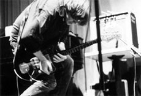

|
SONIC YOUTH: SLEEPING NIGHTS AWAKE
Michael Albright | USA 2006 | 84 Min.
Material : DV
Format: Beta SP
Originalsprache: Englisch
Drehbuch: Michael Albright
Kamera: Ali Alonso, Noah Conrath, Danielle Hauser, Charlie Hayes, Ben Kolton, Allana Noyes, Nathan Lower
Ton: Ali Alonso, Noah Conrath, Danielle Hauser, Charlie Hayes, Ben Kolton, Allana Noyes, Nathan Lower
Schnitt: Michael Albright
Musik: Sonic Youth
Mit Sonic Youth
Produktion: Michael Albright
Vertrieb: Stichting Filmkracht
www.projectmoonshine.org
Deutsche Erstaufführung
4. Juli 2006, Reno, Nevada: Sonic Youth in Concert! Sieben Teenager dokumentieren im Rahmen des "Project Moonshine", das ihnen die Grundzüge des Filmemachens vermitteln soll, das Konzert der Band. Mit Digitalkameras ausgestattet und unter Anleitung von Michael Albright filmen sie Kim Gordon, Thurston Moore, Lee Ranaldo, Steve Shelley und Mark Ibold in Aktion, on und off stage. Das Resultat ist eine schnörkellose Musik-Dokumentation, wie es sie heutzutage nur noch selten zu sehen gibt, und die sich in ihrer Ruhe und Gelassenheit äußerst wohltuend vom MTV-Gedröhn der hektischen Schnitte und hohlen Phrasen abhebt. Ein intimes und unprätentiöses Band-Porträt, ganz im Sinne von Sonic Youth selbst: kein stilistischer Firlefanz, sondern reiner, authentischer Krach.
Michael Albright absolvierte ein Filmstudium an der University of California und studiert Medienwissenschaften an der UCLA. Er arbeitete in New York u.a. mit dem Direct-Cinema-Veteranen Albert Maysles und danach als freier Regisseur und Cutter. 2006 gründete er "Project Moonshine", eine Initiative, die es sich zum Ziel gesetzt hat, junge Talente und Filmstudenten in verschiedenen Bereichen der Filmentwicklung und –produktion zu fördern.
Filme: Being Here 2006 | Que Sera Sera 2006 | Sonic Youth: Sleeping Nights Awake 2006 (UNDERDOX 03) | Shaking Life 2007
zurück
|